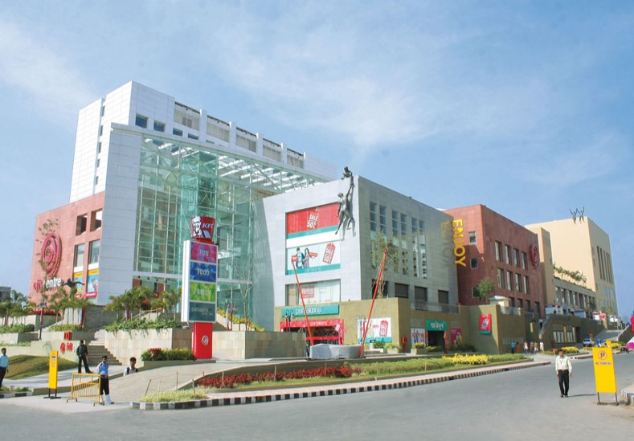

Malls in enhancing Tech-Requirements
What can be more refreshing and enjoying than a visit to a mall with your friends after a difficult and hectic exam schedule spanning an entire week? Well, it seems that there are unlikely many general choices other than this for the normies and extrovert people out there. I visited a mall today, not because I had a hectic week of exams, but because I was completely punctured by boredom by sitting on my couch in my home. I must say that a visit to City Center, Rajarhat, Kolkata, was one hell of a refreshing experience for me after a millenium...
But what made this experience wholesome and utterly enjoyable? It seems most of us might answer it with something like the ambience, mouth-watering dishes in restaurants, 4D cinema theatres, gaming centres, etc. But what makes all these things possible in a smooth and effortless manner? It is the technology which keeps all the things going. With tons of new faces advancing into the malls, there's a need for efficient car parking systems, strict supervision through CCTV cameras, automated robots catering to our food orders, high tech gaming zones with VR and AR, and a multitude of shops and kiosks here and there catering to a wide array of services like jewellery, clothing, cutlery, furnishing, healthcare, and a lot more makes the experience of visiting a mall overwhelming!
Computer Science has a big role to play in all these. By making use of databases, recommender systems, back-end and front-end services, automation, cyber spaces, virtual reality, etc., I believe we can enrich the lives of people and lead to an overall amazing experience which makes all these services worth experiencing.
Published: 4th Jul 2021
